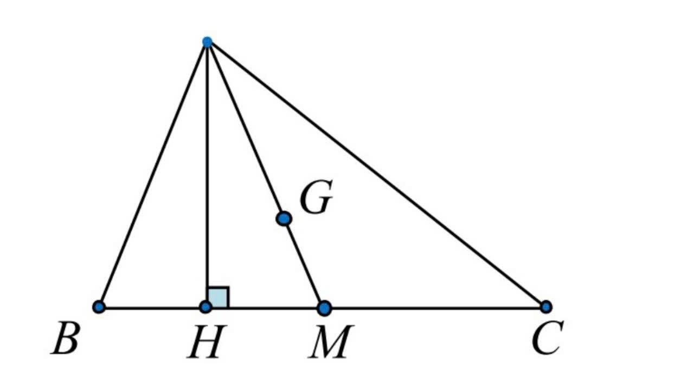
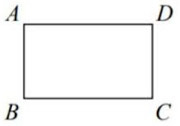
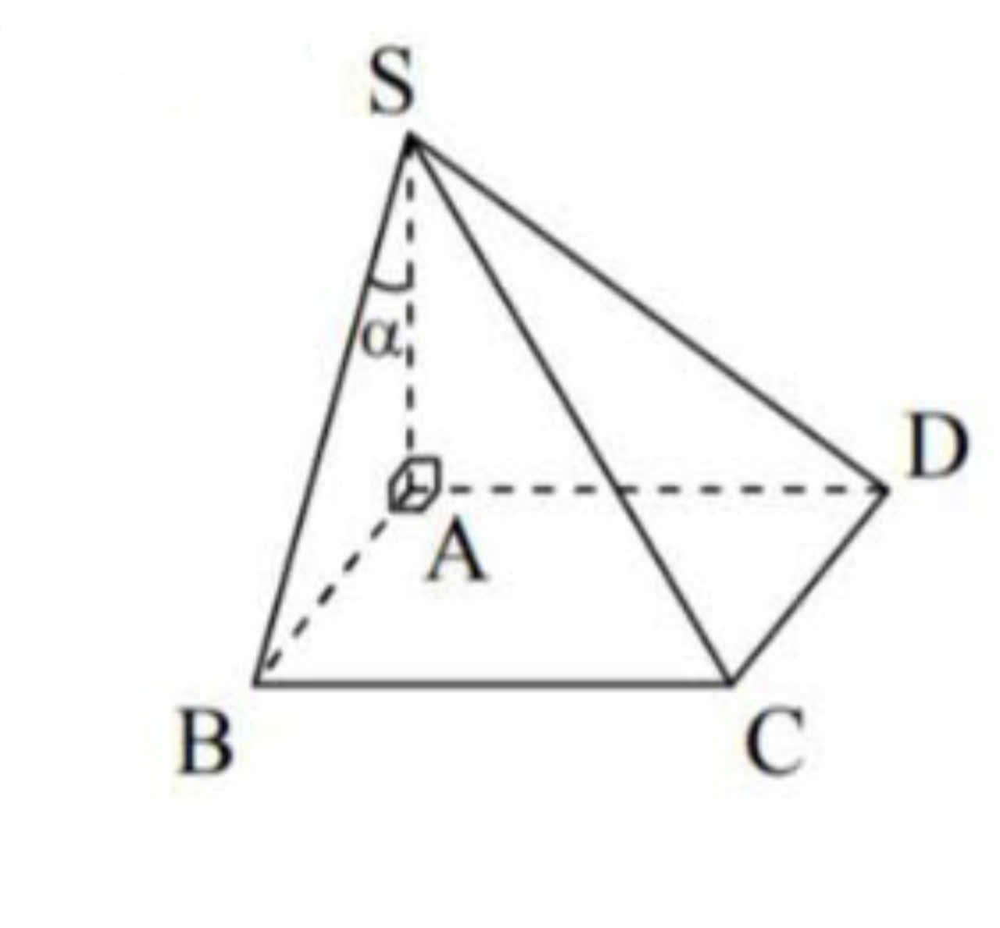
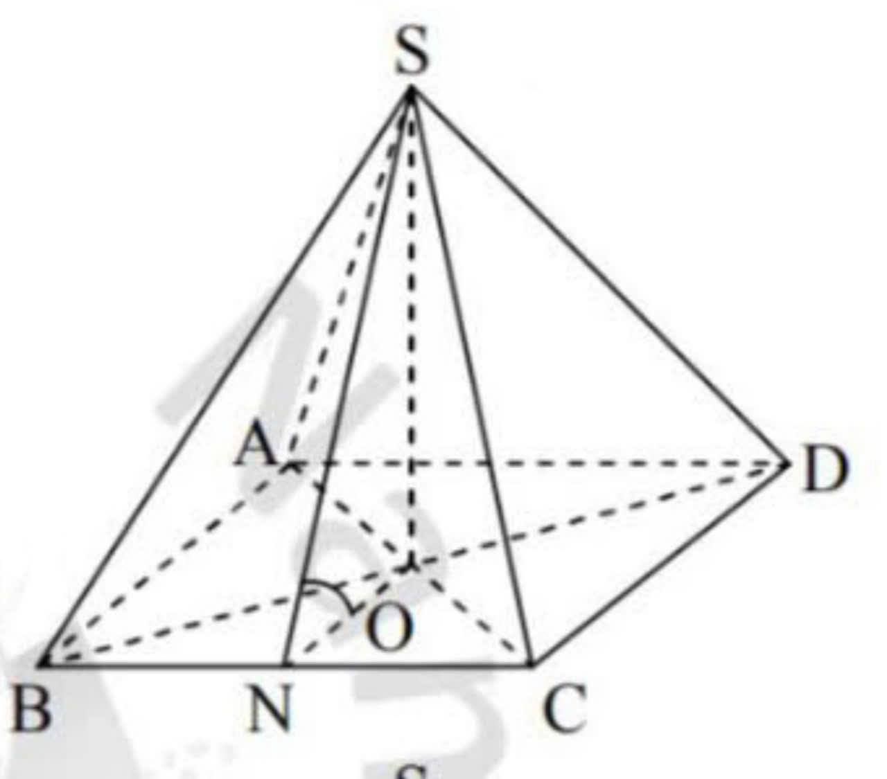
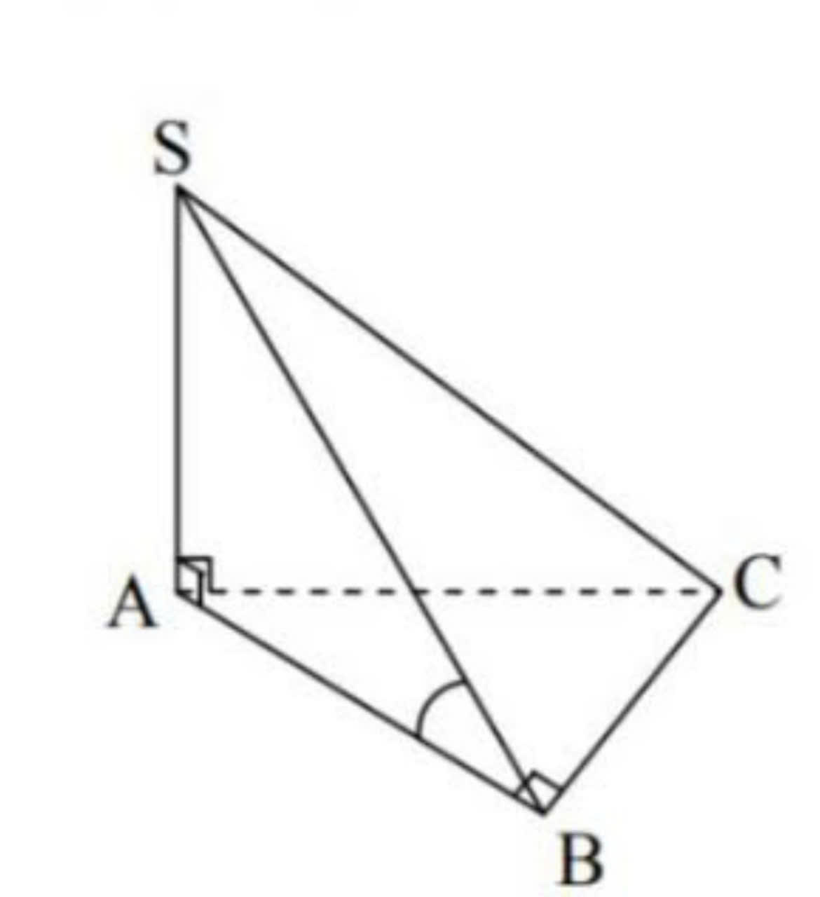

Tóm tắt kiến thức toán hình học không gian 11 và Bài tập trắc nghiệm
- Quan hệ song song
- Kiến thức
- Chứng minh đường thẳng d song song mp(α) (d ⊄ (α))
- Chứng minh mp(α) song song với mp(β)
- Chứng minh hai đường thẳng song song
- Quan hệ vuông góc trong không gian
- Kiến thức
- Chứng minh đường thẳng d vuông góc mp(α)
- Chứng minh mp(α) và (β) vuông góc
- Chứng minh đường thẳng d và d' vuông góc
- Công thức cơ bản
- Kiến thức
- Tam giác
- Tam giác thường: 
- Tam giác đều ABC cạnh a, G là trọng tâm:
- Tam giác ABC vuông tại A
- Tam giác ABC vuông cân tại A
- Tứ giác
- Hình bình hành:
- Hình thoi:
- Hình chữ nhật:
- Hình vuông:
- Hình thang:
- Các hình trong không gian
- Hình lăng trụ:
- Hình chóp:
- Hình trụ:
- Hình nón:
- Hình cầu:
- Một số hình thường gặp
- Kiến thức
- Hình chóp S.ABCD, có đáy ABCD là hình chữ nhật (hoặc hình vuông) và SA vuông góc với đáy
- H1.1 - Đáy, đường cao, cạnh đáy, cạnh bên, mặt bên của hình chóp
- H1.2 - Góc giữa cạnh bên và đáy
- H1.3 - Góc giữa cạnh bên và mặt bên
- H1.4 - Góc giữa mặt bên và mặt đáy
- H1.5 - Khoảng cách "điểm - mặt"
- Hình chóp S.ABCD, có đáy ABCD là hình thang vuông tại A và B, SA vuông góc với đáy
- H2.1 - Đáy, đường cao, cạnh đáy, cạnh bên, mặt bên của hình chóp
- H2.2 - Góc giữa cạnh bên SB và đáy
- H2.3 - Góc giữa mặt bên và mặt đáy
- H2.4 - Khoảng cách "điểm - mặt"
- Hình chóp tứ giác đều S.ABCD
- H3.1 - Đáy, đường cao, cạnh đáy, cạnh bên, mặt bên của hình chóp
- H3.2 - Góc giữa cạnh bên và đáy
- H3.3 - Góc giữa mặt bên và đáy
- H3.4 - Khoảng cách " điểm - mặt "
- Hình chóp S.ABCD, SA vuông góc với đáy
- H4.1 - Đáy, đường cao, cạnh đáy, cạnh bên, mặt bên của hình chóp
- H4.2 - Góc giữa cạnh bên và đáy
- H4.3 - Góc giữa mặt bên (SBC) và mặt đáy (ABC)
- H4.4 - Khoảng cách " điểm - mặt "
- Hình chóp tam giác đều S.ABCD
- H5.1 - Đáy, đường cao, cạnh đáy, cạnh bên, mặt bên của hình chóp
- H5.2 - Góc giữa cạnh bên và đáy
- H5.3 - Góc giữa mặt bên và mặt đáy
- H5.4 - Khoảng cách " điểm - mặt "
- Hình chóp S.ABCD có một mặt bên (SAB) vuông góc với đáy (ABCD)
- H6.1 - Góc giữa cạnh bên và mặt đáy
- H6.2 - Góc giữa mặt bên và mặt đáy
- Hình chóp S.ABCD có một mặt bên (SAB) vuông góc với đáy (ABCD) và ABCD là hình chữ nhật hoặc hình vuông
- H7.1 - Góc giữa cạnh bên và mặt đáy
- H7.2 - Góc giữa mặt bên và mặt đáy
- Hình lăng trụ
- - Lăng trụ
- - Lăng trụ đứng
- - Lăng trụ tam giác đều
- - Lăng trụ có đáy là tam giác đều
- - Lăng trụ tứ giác đều
- - Lăng trụ có đáy là tứ giác đều
- - Hình hộp
- - Hình hộp đứng
- - Hình hộp chữ nhật
- - Hình lập phương
- - Lăng trụ đứng ABC.A'B'C'
- - Hình hộp chữ nhật ABCD.A'B'C'D'
- Bài tập trắc nghiệm

Cách 1. Chứng minh d // d' và (d' ⊂ (α))
Cách 2. Chứng minh d ⊂ (β) và (β) // (α)
Cách 3. Chứng minh d và (α) cùng vuông góc với 1 đường thẳng hoặc cùng vuông góc với 1 mặt phẳng
Bấm vào đây để xem thêm nếu bạn chưa hiểu!

Cách 1. Chứng minh mp (α) chứa hai đường thẳng cắt nhau cùng song song với (β) (Nghĩa là 2 đường thẳng cắt nhau trong mặt này song song với 2 đường thẳng trong mặt phẳng kia
Cách 2. Chứng minh (α) và (β) cùng song song với 1 mặt phẳng hoặc cùng vuông góc với 1 đường thẳng
Bấm vào đây để xem thêm nếu bạn chưa hiểu!

Cách 1. Hai mặt phẳng (α), (β) có điểm chung S lần lượt chứa hai đường thẳng song song a và b thì (α) ∩ (β) = Sx // a // b
Cách 2. (α) // a, a ⊂ (β) ⇒ (α) ∩ (β) = b // a
Cách 3. Hai mặt phẳng cắt nhau cùng song song với một đường thẳng thì giao tuyến của chúng song song với đường thẳng đó
Cách 4. Một mặt phẳng cắt hai mặt phẳng song song cho 2 giao tuyến song song
Cách 5. Một mặt phẳng song song với giao tuyến của 2 mặt phẳng cắt nhau, ta được 3 giao tuyến song song
Cách 6. Hai đường thẳng cùng song song với đường thẳng thứ 3 hoặc cùng vuông góc với một mặt phẳng thì song song với nhau
Cách 7. Sử dụng phương pháp hình học phẳng: đường trung bình, định lí Thales đảo, cạnh đối tứ giác đặc biệt,...
Bấm vào đây để xem thêm nếu bạn chưa hiểu!

Cách 1. Chứng minh dường thẳng d vuông góc với hai đường thẳng cắt nhau nằm trong (α)
Cách 2. Chứng minh d nằm trong một trong hai mặt phẳng vuông góc và d vuông góc với giao tuyến ⇒ d vuông góc với mp còn lại
Cách 3. Chứng minh d là giao tuyến của hai mặt phẳng cùng vuông góc với mặt thứ 3
Cách 4. Chứng minh đường thẳng d song song với a mà a ⊥ (α)
Cách 5. Đường thẳng nào vuông góc với một trong hai mặt phẳng song song thi cũng vuông góc với mặt phẳng còn lại
Cách 6. Chứng minh d là trục của tam giác ABC nằm trong (α)
Bấm vào đây để xem thêm nếu bạn chưa hiểu!

Cách 1. Chứng minh (α) ⊃ d và d ⊥ (β)
Cách 2. Chứng tỏ góc giữa 2 mp (α) và (β)bằng 90°
Cách 3. Chứng minh a // (α) mà (β) ⊥ (α)
Cách 4. Chứng minh (α) // (P) mà (β) // (P)
Bấm vào đây để xem thêm nếu bạn chưa hiểu!

Cách 1. Chứng minh d ⊥ (α) và (α) ⊃ d''
Cách 2. Chứng tỏ góc giữa d, d'bằng 90°
Cách 3. Sử dụng định lí 3 đường vuông góc
Bấm vào đây để xem thêm nếu bạn chưa hiểu!
+ \( S_{ABC} = \frac{1}{2} BC \cdot AH = \frac{1}{2} AB \cdot AC \cdot \sin A = \frac{abc}{4R} = pr = \sqrt{p(p-a)(p-b)(p-c)}\)
+ \( S_{ABM} = S_{ACM} = \frac{1}{2} S_{ABC} \) (G là trọng tâm)
+ \( AG = \frac{2}{3} AM \)
Độ dài trung tuyến:
\( AM^2 = \frac{AB^2 + AC^2}{2} - \frac{BC^2}{4} \)
Định lí hàm số cosin:
\(BC^2=AB^2+AC^2-2AB\cdot AC\cdot cos A\)
Định lí hàm số sin:
\(\frac{a}{sin A}=\frac{b}{sin B}=\frac{c}{sin C}=2R\)
+ \( S_{ABC} = \frac{(canh)^2 \sqrt{3}}{4} = \frac{a^2 \sqrt{3}}{4}\)
+ \(AH=\frac{canh\cdot\sqrt{3}}{2}=\frac{a\sqrt{3}}{2}\)
+ \(AG=\frac{2}{3}AH=\frac{a\sqrt{3}}{2}\)
+ \(S_{ABC}=\frac{1}{2}AB\cdot AC=\frac{1}{2}AH\cdot BC\)
+ \(BA^2=BH\cdot BC\)
+ \(CA^2=CH\cdot CB\)
+ \(BC^2=AB^2+AC^2\)
+ \(HA^2=HB \cdot HC\)
+ \(AH\cdot BC=AB\cdot AC\)
+ \(\frac{1}{AH^2}=\frac{1}{AB^2}+\frac{1}{AC^2}\)
+ \(\frac{HB}{HC}=\frac{AB^2}{AC^2}\)
+ \(AM=\frac{1}{2}BC\)
+ \(sin B=\frac{AC}{BC}\)
+ \(cos B=\frac{AB}{BC}\)
+ \(tan B=\frac{AC}{AB}\)
+ \(cot B=\frac{AB}{AC}\)
+ \(BC=AB\sqrt{2}=AC\sqrt{2}\)
+ \(AB=AC=\frac{BC}{\sqrt{2}}\)
Diện tích:
\(S_{ABC}=BC\cdot AH=AB\cdot AD\cdot sin A\)
Diện tích:
\(S_{ABC}=\frac{1}{2}AC\cdot BD=AB\cdot AD\cdot sin A\)
Khi \( \widehat{ABC}=60^\circ\) hoặc \(\widehat{BAC}=120^\circ\) thì các tam giác ABC, ACD đều. Khi đó, \(S_{ABCD}=2S_{ABC}=2S_{ADC}\)

Diện tích:
\(S_{ABCD}=AB\cdot AD\)
Diện tích:
\(S_{ABCD}=AB^2\)
Đường chéo:
\(AC=AB\sqrt{2}\)
Diện tích:
\(S_{ABCD}=\frac{(AD+BC)\cdot AH}{2}\)
Thể tích khối lăng trụ:
\( V=S_{đáy}\cdot \)Chiều cao
Diện tích xung quang:
\( S_{xq}= \)Tổng diện tích các mặt bên
Diện tích toàn phần:
\( S_{tp} = S_{xq}+S_{2đáy} \)
Thể tích khối chóp:
\( V=\frac{1}{3}S_{đáy}\cdot \)Chiều cao
Diện tích xung quang:
\( S_{xq}= \)Tổng diện tích các mặt bên
Diện tích toàn phần:
\( S_{tp} = S_{xq}+S_{đáy} \)
Thể tích khối trụ:
\(V=\pi R^2\cdot h\)
Diện tích xung quang:
\( S_{xq}=2\pi R\cdot h \)
Diện tích toàn phần:
\( S_{tp} = S_{xq}+2S_{đáy} \)
Thể tích khối nón:
\(V=\frac{1}{3}S\cdot h=\frac{1}{3}\pi R^2\cdot h\)
Diện tích xung quang:
\( S_{xq}=\pi R\cdot l \)
Diện tích toàn phần:
\( S_{tp} = S_{xq}+S_{đáy} \)
Thể tích khối cầu:
\(V=\frac{4}{3}\pi R^3\)
Diện tích mặt cầu:
\( S=4\pi R^2 \)

a) Đáy:
- ABCD là hình vuông hoặc hình chữ nhật
b) Đường cao:
- SA
c) Cạnh bên:
- SA, SB, SC, SD
d) Cạnh đáy:
- AB, BC, CD, DA
e) Mặt bên:
- ΔSAB là tam giác vuông tại A.
- ΔSBC là tam giác vuông tại B.
- ΔSCD là tam giác vuông tại C.
- ΔSAD là tam giác vuông tại A.
a) Góc giữa cạnh bên SB và mặt đáy (ABCD) bằng α:
- Ta có: SA ⊥ (ABCD) (gt)
⇒ Hình chiếu của SB lên (ABCD) là AB
⇒ \((\widehat{SB,(ABCD)}) = (\widehat{SB,AB}) = \widehat{SBA} = \alpha\)
b) Góc giữa cạnh bên SD và mặt đáy (ABCD) bằng α:
- Ta có: SA ⊥ (ABCD) (gt)
⇒ Hình chiếu của SD lên (ABCD) là AD
⇒ \((\widehat{SD,(ABCD)}) = (\widehat{SD,AD}) = \widehat{SDA} = \alpha\)
c) Góc giữa cạnh bên SC và mặt đáy (ABCD) bằng α:
- Ta có: SA ⊥ (ABCD) (gt)
⇒ Hình chiếu của SC lên (ABCD) là AC
⇒ \((\widehat{SC,(ABCD)}) = (\widehat{SC,AC}) = \widehat{SCA} = \alpha\)
a) Góc giữa cạnh bên SB và mặt bên (SAD) bằng α:

- Ta có: AB ⊥ (SAD) (gt)
⇒ Hình chiếu của SB lên (SAD) là SA
⇒ \((\widehat{SB,(SAD)}) = (\widehat{SB,SA}) = \widehat{BSA} = \alpha\)
b) Góc giữa cạnh bên SD và mặt bên (SAB) bằng α:
- Ta có: AD ⊥ (SAB) (gt)
⇒ Hình chiếu của SD lên (SAB) là SA
⇒ \((\widehat{SD,(SAB)}) = (\widehat{SD,SA}) = \widehat{DSA} = \alpha\)
c) Góc giữa cạnh bên SC và mặt bên (SAB) bằng α:
- Ta có: BC ⊥ (SAB) (gt)
⇒ Hình chiếu của SC lên (SAB) là SB
⇒ \((\widehat{SC,(SAB)}) = (\widehat{SC,SB}) = \widehat{BSC} = \alpha\)
c) Góc giữa cạnh bên SC và mặt bên (SAD) bằng α:
- Ta có: DC ⊥ (SAD) (gt)
⇒ Hình chiếu của SC lên (SAD) là SD
⇒ \((\widehat{SC,(SAD)}) = (\widehat{SC,SD}) = \widehat{DSC} = \alpha\)
a) Góc giữa mặt bên (SBC) và mặt đáy (ABCD) bằng α:
- Ta có:
+ BC ⊥ AB tại B(?)
+ BC ⊥ SB tại B (?)
+ (SBC) ∩ (ABCD) = BC
⇒ \((\widehat{SBC,(ABCD)}) = (\widehat{AB,SB}) = \widehat{SBA} = \alpha\)
b) Góc giữa mặt bên (SCD) và mặt đáy (ABCD) bằng α:
- Ta có:
+ CD ⊥ AD tại D(?)
+ CD ⊥ SD tại D (?)
+ (SCD) ∩ (ABCD) = CD
⇒ \((\widehat{SCD,(ABCD)}) = (\widehat{AD,SD}) = \widehat{SDA} = \alpha\)
c) Góc giữa mặt phẳng (SBD) và mặt đáy (ABCD) bằng α:
Đáy ABCD là hình chữ nhật:

- Trong (ABCD), vẽ AH ⊥ BD tại H
⇒ BD ⊥ SH (?)
⇒ \((\widehat{SBD,(ABCD)}) = (\widehat{AH,SH}) = \widehat{SHA} = \alpha\)
Chú ý:
Nếu AB < AD thì điểm H ở gần B hơn
Nếu AB > AD thì điểm H ở gần D hơn
Đáy ABCD là hình vuông:
- Gọi O = AC ∩ BD
⇒ AO ⊥ BD (?)
⇒ BD ⊥ SO (?)
⇒ \((\widehat{SBD,(ABCD)}) = (\widehat{SO,AO}) = \widehat{SOA} = \alpha\)
a) Khoảng cách từ A đến một mặt phẳng (SCD):
- Trong mp(SDA), vẽ AH ⊥ SD tại H
⇒ AH ⊥ (SCD) (?)
⇒ d[A,(SCD)] = AH
b) Khoảng cách từ B đến một mặt phẳng (SCD):
- Vì AB // (SCD) (?)
⇒ d[B,(SCD)] = d[A,(SCD)]
c) Khoảng cách từ A đến một mặt phẳng (SBC):
- Trong mp(SAB), vẽ AH ⊥ SB tại H
⇒ AH ⊥ (SBC) (?)
⇒ d[A,(SBC)] = AH (?)
d) Khoảng cách từ D đến một mặt phẳng (SBC):
- Vì AD // (SBC) (?)
⇒ d[D,(SBC)] = d[A,(SBC)]
e) Góc giữa mặt phẳng (SBD) và mặt đáy (ABCD) bằng α:
Đáy ABCD là hình chữ nhật:
- Trong (ABCD), vẽ AI ⊥ BD tại I
⇒ BD ⊥ (SAI) (?)
- Trong (SAI), vẽ AH ⊥ SI tại H
⇒ AH ⊥ (SBD) (?)
⇒ d[A,(SBD)] = AH
Chú ý:
Nếu AB < AD thì điểm I ở gần B hơn
Nếu AB > AD thì điểm I ở gần D hơn
Đáy ABCD là hình vuông:
- Gọi O = AC ∩ BD
⇒ AO ⊥ BD (?)
⇒ BD ⊥ (SAO) (?)
- Trong (SAO), vẽ AH ⊥ SO tại H
⇒ AH ⊥ (SBD) (?)
⇒ d[A,(SBD)] = AH
- Vì O là trung điểm của AC
⇒ d[C,(SBD)] = d[A,(SBD)]
f) Khoảng cách từ C đến mặt phẳng (SBD):

a) Đáy:
- Hình thang ABCD vuông tại A và B
b) Đường cao:
- SA
c) Cạnh bên:
- SA, SB, SC, SD
d) Cạnh đáy:
- AB, BC, CD, DA
e) Mặt bên:
- ΔSAB là tam giác vuông tại A.
- ΔSBC là tam giác vuông tại B.
- ΔSCD là tam giác vuông tại C.
- ΔSAD là tam giác vuông tại A.
Chú ýNếu AB = BC và AD = 2BC thì AC ⊥ CD
⇒ CD ⊥ (SAC) ⇒ vuông tại C
a) Góc giữa cạnh bên SB và mặt đáy (ABCD):
- Ta có: SA ⊥ (ABCD) (gt)
⇒ Hình chiếu của SB lên (ABCD) là AB
⇒ \((\widehat{SB,(ABCD)}) = (\widehat{SB,AB}) = \widehat{SBA}\)
b) Góc giữa cạnh bên SD và mặt đáy (ABCD):
- Ta có: SA ⊥ (ABCD) (gt)
⇒ Hình chiếu của SD lên (ABCD) là AD
⇒ \((\widehat{SD,(ABCD)}) = (\widehat{SD,AD}) = \widehat{SDA}\)
c) Góc giữa cạnh bên SC và mặt đáy (ABCD):
- Ta có: SA ⊥ (ABCD) (gt)
⇒ Hình chiếu của SC lên (ABCD) là AC
⇒ \((\widehat{SC,(ABCD)}) = (\widehat{SC,AC}) = \widehat{SCA}\)
a) Góc giữa mặt bên (SBC) và mặt đáy (ABCD):
- Ta có:
+ BC ⊥ AB tại B(?)
+ BC ⊥ SB tại B (?)
+ (SBC) ∩ (ABCD) = BC
⇒ \((\widehat{SBC,(ABCD)}) = (\widehat{AB,SB}) = \widehat{SBA}\)
b) Góc giữa mặt phẳng (SCD) và mặt đáy (ABCD):
- Trong (ABCD), vẽ AM ⊥ CD tại M
⇒ SM ⊥ CD tại M (?)
- Mà (SCD) ∩ (ABCD) = CD
⇒ \((\widehat{SCD,(ABCD)}) = (\widehat{AM,SM}) = \widehat{SMA} = \alpha\)
Chú ý:
Nếu AB = AD và AD = 2BC
Thì AC ⊥ CD. Do đó M ≡ C.
a) Khoảng cách từ A đến mặt phẳng (SBC):
- Trong mp(SAB), vẽ AH ⊥ SB tại H
⇒ AH ⊥ (SBC)(?)
⇒ d[A,(SBC)] = AH
b) Khoảng cách từ D đến mặt phẳng (SBC):
- Vì AD // (SBC)(?)
⇒ d[D,(SBC)] = d[A,(SBC)]
c) Khoảng cách từ A đến mặt phẳng (SCD):
- Trong (ABCD), vẽ AM ⊥ CD tại M
⇒ CD ⊥ (SAM)(?)
- Trong (SAM), vẽ AH ⊥ SM tại H
⇒ AH ⊥ (SCD)(?)
⇒ d[A,(SCD)] = AH
Chú ý:
Nếu AB = AD và AD = 2BC
Thì AC ⊥ CD. Do đó M ≡ C.
a) Đáy:
-ABCD là vuông
b) Đường cao:
- SO
c) Cạnh bên:
- SA= SB = SC = SD
d) Cạnh đáy:
- AB = BC = CD = DA
e) Mặt bên:
- ΔSAB, ΔSBC, ΔSCD, ΔSAD
- là các tam giác cân tại S và bằng nhau
Gọi O là tâm hình vuông ABCD ⇒ SO ⊥ (ABCD)
a) Góc giữa cạnh bên SA và mặt đáy (ABCD):
- Ta có: SO ⊥ (ABCD)(?)
⇒ Hình chiếu của SA lên (ABCD) là AO
⇒ \((\widehat{SA,(ABC)}) = (\widehat{SA,A0}) = \widehat{SAO}\)
b) Góc giữa cạnh bên SB và mặt đáy (ABCD):
- Tương tự
⇒ \((\widehat{SB,(ABCD)}) = (\widehat{SB,B0}) = \widehat{SBO}\)
c) Góc giữa cạnh bên SC và mặt đáy (ABCD):
- Tương tự
⇒ \((\widehat{SC,(ABCD)}) = (\widehat{SC,C0}) = \widehat{SCO}\)
d) Góc giữa cạnh bên SD và mặt đáy (ABCD):
- Tương tự
⇒ \((\widehat{SD,(ABCD)}) = (\widehat{SD,D0}) = \widehat{SDO}\)
Chú ý:
\((\widehat{SAO}) = (\widehat{SBO}) = \widehat{SCO} = \widehat{SDO}\)
→ " Góc giữa các cạnh bên với mặt đáy bằng nhau "
a) Góc giữa mặt bên (SAB) và mặt đáy (ABCD):
- Ta có: OM ⊥ AB tại M (?)
⇒ AB ⊥ SM tại M (?)
- Mà (SAB) ∩ (ABCD) = AB
⇒ \((\widehat{SAB,(ABCD)}) = (\widehat{OM,SM}) = \widehat{SMO}\)
b) Góc giữa mặt bên (SBC) và mặt đáy (ABCD):

<
- Ta có: ON ⊥ BC tại N (?)
⇒ BC ⊥ SN tại N (?)
- Mà (SBC) ∩ (ABCD) = BC
⇒ \((\widehat{SBC,(ABCD)}) = (\widehat{ON,SN}) = \widehat{SNO}\)
c) Góc giữa mặt bên (SCD) và mặt đáy (ABCD):
- Ta có: OP ⊥ CD tại P (?)
⇒ CD ⊥ SP tại P (?)
- Mà (SCD) ∩ (ABCD) = CD
⇒ \((\widehat{SCD,(ABCD)}) = (\widehat{OP,SP}) = \widehat{SPO}\)
d) Góc giữa mặt bên (SAD) và mặt đáy (ABCD):
- Ta có: OQ ⊥ AD tại Q (?)
⇒ AD ⊥ SQ tại Q (?)
- Mà (SAD) ∩ (ABCD) = AD
⇒ \((\widehat{SAD,(ABCD)}) = (\widehat{OQ,SQ}) = \widehat{SQO}\)
Chú ý:
\((\widehat{SMO}) = (\widehat{SNO}) = \widehat{SPO} = \widehat{SQO}\)
→ " Góc giữa các mặt bên với mặt đáy bằng nhau "
a) Khoảng cách từ O đến mặt phẳng (SCD):
- Trong mp(ABCD), vẽ OM ⊥ CD tại M
⇒ CD ⊥ (SOM) (?)
- Trong mp(SOM), vẽ OH ⊥ SM tại H
⇒ d[O,(SCD)] = OH
b) Khoảng cách từ A đến mặt phẳng (SCD):
<
- Vì O là trung điểm của AC
⇒ d[A,(SCD)] = 2d[O,(SCD)]
c) Khoảng cách từ B đến mặt phẳng (SCD):
- Vì O là trung điểm của BD
⇒ d[B,(SCD)] = 2d[O,(SCD)]
a) Đáy:
- Tam giác ABC
b) Đường cao:
- SA
c) Cạnh bên:
- SA, SB, SC
d) Cạnh đáy:
- AB, BC, CA
e) Mặt bên:
- ΔSAB là tam giác vuông tại A
- ΔSAC là tam giác vuông tại A
Chú ý:
Nếu ΔABC vuông tại B thì ΔSBC vuông tại B
Nếu ΔABC vuông tại C thì ΔSBC vuông tại C
a) Góc giữa cạnh bên SB và mặt đáy (ABC):
- Ta có: SA ⊥ (ABC)(gt)
⇒ Hình chiếu của SB lên (ABC) là AB
⇒ \((\widehat{SB,(ABC)}) = (\widehat{SB,AB}) = \widehat{SBA}\)
b) Góc giữa cạnh bên SC và mặt đáy (ABC):
- Ta có: SA ⊥ (ABC)(gt)
⇒ Hình chiếu của SC lên (ABC) là AC
⇒ \((\widehat{SC,(ABC)}) = (\widehat{SC,AC}) = \widehat{SCA}\)
a) Tam giác ABC vuông tại B:

- Ta có:
BC ⊥ AB tại B (?)
BC ⊥ SB tại B (?)
(SBC) ∩ (ABC) = BC
⇒ \((\widehat{SBC,(ABC)}) = (\widehat{AB,SB}) = \widehat{SBA}\)
b) Tam giác ABC vuông tại C:
<
- Ta có:
BC ⊥ AC tại C (?)
BC ⊥ SC tại C (?)
(SBC) ∩ (ABC) = BC
⇒ \((\widehat{SBC,(ABC)}) = (\widehat{AC,SC}) = \widehat{SCA}\)
c) Tam giác ABC vuông tại A:
<
- Trong (ABC), vẽ AM ⊥ BC tại M (?)
⇒ BC ⊥ SM tại M (?)
(SBC) ∩ (ABC) = BC
⇒ \((\widehat{SBC,(ABC)}) = (\widehat{AM,SM}) = \widehat{SMA}\)
Chú ý:
- M không là trung điểm BC
- Nếu \(\widehat{ABC}\) > \(\widehat{ACB}\) thì M ở trên đoạn BC và gần B hơn
- Nếu \(\widehat{ABC}\) < \(\widehat{ACB}\) thì M ở trên đoạn BC và gần C hơn
- Nếu BC > AC thì M ở trên đoạn BC và gần C hơn
- Nếu AB > AC thì M ở trên đoạn BC và gần B hơn
d) Tam giác ABC cân tại A ( hoặc đều ):
- Gọi M là trung điểm BC
⇒ BC ⊥ AM tại M (?)
⇒ BC ⊥ SM tại M (?)
- Mà (SBC) ∩ (ABC) = SM
⇒ \((\widehat{SBC,(ABC)}) = (\widehat{AM,SM}) = \widehat{SMA}\)
e) Tam giác ABC có \(\widehat{ABC}\) > \(90^\circ\) :
\(90^\circ\)"
- Trong (ABC), vẽ AM ⊥ BC tại M (?)
⇒ BC ⊥ SM tại M (?)
(SBC) ∩ (ABC) = BC
⇒ \((\widehat{SBC,(ABC)}) = (\widehat{AM,SM}) = \widehat{SMA}\)
Chú ý:
- M nằm ngoài đoạn BC và ở về phía B
f) Tam giác ABC có \(\widehat{ACB}\) > \(90^\circ\) :
\(90^\circ\)"
- Trong (ABC), vẽ AM ⊥ BC tại M (?)
⇒ BC ⊥ SM tại M (?)
(SBC) ∩ (ABC) = BC
⇒ \((\widehat{SBC,(ABC)}) = (\widehat{AM,SM}) = \widehat{SMA}\)
Chú ý:
- M nằm ngoài đoạn BC và ở về phía C
a) Khoảng cách từ B đến mặt phẳng (SAC):
- Trong mp(ABC), vẽ BH ⊥ AC tại H
⇒ BH ⊥ (SAC) (?)
⇒ d[B,(SAC)] = BH
Chú ý:
- Nếu ΔABC vuông tại A thì H ≡ A và khi đó AB = d[B,(SAC)]
- Nếu ΔABC vuông tại C thì H ≡ C và khi đó BC = d[B,(SAC)]
b) Khoảng cách từ C đến mặt phẳng (SAB):
- Trong mp(ABC), vẽ CH ⊥ AB tại H
⇒ CH ⊥ (SAB) (?)
⇒ d[C,(SAB)] = CH
Chú ý:
- Nếu ΔABC vuông tại A thì H ≡ A và khi đó CA = d[C,(SAC)]
- Nếu ΔABC vuông tại BC thì H ≡ C và khi đó CB = d[B,(SAC)]
c) Khoảng cách từ A đến mặt phẳng (SBC):
- Trong (ABC), vẽ AM ⊥ BC tại M
⇒ BC ⊥ SM tại M (?)
- Trong mp(SAM), vẽ AH ⊥ AM tại H
⇒ d[A,(SBC)] = AH
Chú ý:
- Tùy đặc điểm của ΔABC để xác định đúng vị trí của điểm M trên đường thẳng BC
a) Đáy:
- Tam giác ABC đều
b) Đường cao:
- SO
c) Cạnh bên:
- SA = SB = SC = SD
d) Cạnh đáy:
- AB = BC = CA
e) Mặt bên:
- ΔSAB, ΔSBC, ΔSCA là các tam giác cân tại S và bằng nhau
Gọi O là trọng tâm của tam giác ABC ⇒ SO ⊥ (ABC)
- Chú ý:
Tứ diện đều S.ABC là hình chóp có đáy và các mặt bên là những tam giác đều bằng nhau
a) Góc giữa cạnh bên SA và mặt đáy (ABC):
- Ta có: SO ⊥ (ABC)(?)
⇒ Hình chiếu của SA lên (ABC) là AO
⇒ \((\widehat{SA,(ABC)}) = (\widehat{SA,AO}) = \widehat{SAO}\)
b) Góc giữa cạnh bên SB và mặt đáy (ABC):
Tương tự \((\widehat{SB,(ABC)}) = (\widehat{SB,BO}) = \widehat{SBO}\)
c) Góc giữa cạnh bên SC và mặt đáy (ABC):
Tương tự \((\widehat{SC,(ABC)}) = (\widehat{SC,CO}) = \widehat{SCO}\)
- Chú ý:
\(\widehat{SAO} = \widehat{SBO} = \widehat{SCO}\)
→ "Góc giữa các cạnh bên với mặt đáy bằng nhau"
a) Góc giữa mặt bên (SAB) và mặt đáy (ABC):
- Ta có:
OM ⊥ AB tại M (?)
⇒ AB ⊥ SM tại M (?)
- Mà (SAB) ∩ (ABC) = AB
⇒ \((\widehat{SAB,(ABC)}) = (\widehat{OM,SM}) = \widehat{SMO}\)
b) Góc giữa mặt bên (SBC) và mặt đáy (ABC):
<
- Ta có:
ON ⊥ BC tại N (?)
⇒ BC ⊥ SN tại N (?)
- Mà (SBC) ∩ (ABC) = BC
⇒ \((\widehat{SBC,(ABCD)}) = (\widehat{ON,SN}) = \widehat{SNO}\)
c) Góc giữa mặt bên (SAC) và mặt đáy (ABC):
<
- Ta có: OP ⊥ AC tại P (?)
⇒ AC ⊥ SP tại P (?)
- Mà (SAC) ∩ (ABC) = AC
⇒ \((\widehat{SAC,(ABC)}) = (\widehat{OP,SP}) = \widehat{SPO}\)
- Chú ý:
\(\widehat{SMO} = \widehat{SNO} = \widehat{SPO}\)
→ "Góc giữa các mặt bên với mặt đáy bằng nhau"
a) Khoảng cách từ O đến mặt phẳng (SAB):
- Trong mp(ABC), vẽ OM ⊥ AB tại M
⇒ AB ⊥ (SOM) (?)
- Trong mp(SOM), vẽ OH ⊥ SM tại H
⇒ d[O,(SAB)] = OH
b) Khoảng cách từ C đến mặt phẳng (SAB):
- Vì O là trọng tâm của ΔABC nên \(\frac{MC}{MO} = 3\)
⇒ \(d[C,(SAB)] = \frac{MC}{MO} \cdot d[O,(SAB)] = 3 d[O,(SAB)]\)
" Luôn luôn vẽ SH vuông góc với giao tuyến "

- Vẽ SH ⊥ AB tại H
- Vì (SAB) ⊥ (ABC) nên SH ⊥ (ABC)
- Chú ý:
Tùy đặc điểm của tam giác SAB để xác định đúng vị trí của điểm H trên đường thẳng AB.
a) Góc giữa cạnh bên SA và mặt đáy (ABC):
- Ta có: SH ⊥ (ABC) (?)
⇒ Hình chiếu của SA lên (ABC) là AH
⇒ \((\widehat{SA,(ABC)}) = (\widehat{SA,AH}) = \widehat{SAH}\)
b) Góc giữa cạnh bên SB và mặt đáy (ABC):
- Ta có: SH ⊥ (ABC) (?)
⇒ Hình chiếu của SB lên (ABC) là BH
⇒ \((\widehat{SB,(ABC)}) = (\widehat{SB,BH}) = \widehat{SBH}\)
c) Góc giữa cạnh bên SC và mặt đáy (ABC):
- Ta có: SH ⊥ (ABC) (?)
⇒ Hình chiếu của SC lên (ABC) là CH
⇒ \((\widehat{SC,(ABC)}) = (\widehat{SC,CH}) = \widehat{SCH}\)
- Vẽ SH ⊥ AB tại H
- Vì (SAB) ⊥ (ABC) nên SH ⊥ (ABC)
- Chú ý:
Tùy đặc điểm của tam giác SAB để xác định đúng vị trí của điểm H trên đường thẳng AB.
a) Góc giữa mặt bên (SAB) và mặt đáy (ABC):
- Vì (SAB) ⊥ (ABC)
⇒ \(\widehat{(ABC),(ABC)}\) = 90\^circ
b) Góc giữa mặt bên (SAC) và mặt đáy (ABC):
- Vẽ HM ⊥ AC tại M
- Ta có:
\[ \left\{ \begin{array}{l} HM ⊥ AC \\ SH ⊥ AC \end{array} \right. \]
⇒ AC ⊥ (SHM), mà SM ⊂ (SHM)
⇒ SM ⊥ AC
⇒ \((\widehat{(SBC),(ABC)}) = (\widehat{HM,SM}) = \widehat{SMH}\)
c) Góc giữa mặt bên (SBC) và mặt đáy (ABC):
- Vẽ HN ⊥ AC tại N
- Ta có:
\[ \left\{ \begin{array}{l} HN ⊥ BC \\ SH ⊥ BC \end{array} \right. \]
⇒ BC ⊥ (SHN), mà SN ⊂ (SHN)
⇒ SN ⊥ AB
⇒ \((\widehat{(SBC),(ABC)}) = (\widehat{HN,SN}) = \widehat{SNH}\)
" Luôn luôn vẽ SH vuông góc với giao tuyến "

- Vẽ SH ⊥ AB tại H
- Vì (SAB) ⊥ (ABCD) nên SH ⊥ (ABCD)
- Chú ý:
Tùy đặc điểm của tam giác SAB để xác định đúng vị trí của điểm H trên đường thẳng AB.
a) Góc giữa cạnh bên SA và mặt đáy (ABCD):
- Ta có: SH ⊥ (ABCD) (?)
⇒ Hình chiếu của SA lên (ABC) là AH
⇒ \((\widehat{SA,(ABCD)}) = (\widehat{SA,AH}) = \widehat{SAH}\)
b) Góc giữa cạnh bên SB và mặt đáy (ABCD):
- Tương tự:
\((\widehat{SB,(ABCD)}) = (\widehat{SB,BH}) = \widehat{SBH}\)
c) Góc giữa cạnh bên SC và mặt đáy (ABCD):
- Tương tự:
\((\widehat{SC,(ABCD)}) = (\widehat{SC,CH}) = \widehat{SCH}\)
d) Góc giữa cạnh bên SD và mặt đáy (ABCD):
- Tương tự:
\((\widehat{SD,(ABCD)}) = (\widehat{SD,DH}) = \widehat{SDH}\)
a) Góc giữa mặt bên (SAD) và mặt đáy (ABCD):
- Ta có:
HA ⊥ AD (?)
SH ⊥ AD (?)
⇒ AD ⊥ (SHA) ⇒ AD ⊥ SA
- Mà (SAD) ∩ (ABCD) = AD
⇒ \((\widehat{(SAD),(ABCD)}) = (\widehat{SA,AH}) = \widehat{SAH}\)
b) Góc giữa mặt bên (SBC) và mặt đáy (ABCD):
- Ta có:
BA ⊥ BC (?)
SH ⊥ BC (?)
⇒ BC ⊥ (SHB) ⇒ BC ⊥ SB
- Mà (SBC) ∩ (ABCD) = BC
⇒ \((\widehat{(SBC),(ABCD)}) = (\widehat{SB,BH}) = \widehat{SBH}\)
c) Góc giữa mặt bên (SCD) và mặt đáy (ABCD):
- Trong (ABCD), vẽ HM ⊥ CD tại M
- Ta có:
\[ \left\{ \begin{array}{l} HM ⊥ CD \\ SH ⊥ CD \end{array} \right. \]
⇒ CD ⊥ (SHM) ⇒ CD ⊥ SM
- Mà (SCD) ⊂ (ABCD) = CD
⇒ \((\widehat{(SCD),(ABCD)}) = (\widehat{HM,SM}) = \widehat{SMH}\)
- Hai đáy song song và là 2 đá giác bằng nhau
- Các cạnh bên song song và bằng nhau
- Các mặt bên là các hình bình hành
- Là lăng trụ có các cạnh bên vuông góc với đáy
- Là lăng trụ đứng, có đáy là tam giác đều
- Là lăng trụ xiên, có đáy là tam giác đều
- Là lăng trụ đứng, có đáy là hình vuông
- Là lăng trụ xiên, có đáy là hình vuông
- Là hình lăng trụ xiên, có đáy là hình bình hành
- Là hình lăng trụ đứng, có đáy là hình bình hành
- Là hình lăng trụ đứng, có đáy là hình chữ nhật
- Là hình lăng trụ đứng, có đáy và các mặt bên là vuông
- Góc giữa mp(A'BC) và mp(ABC):
Vẽ AM ⊥ BC tại M
⇒ A'M ⊥ BC (?)
⇒ \((\widehat{(A'BC),(ABC)}) = \widehat{AMA'}\)
- Chú ý:
Tùy đặc điểm của tam giác ABC để xác định đúng vị trí của điểm M trên đường thẳng BC.
- Góc giữa mp(A'B'CD) và mp(ABCD):
Ta có: BC ⊥ CD
⇒ CD ⊥ B'C (?)
⇒ \((\widehat{(A'B'CD),(ABCD)}) = \widehat{BCB'}\)